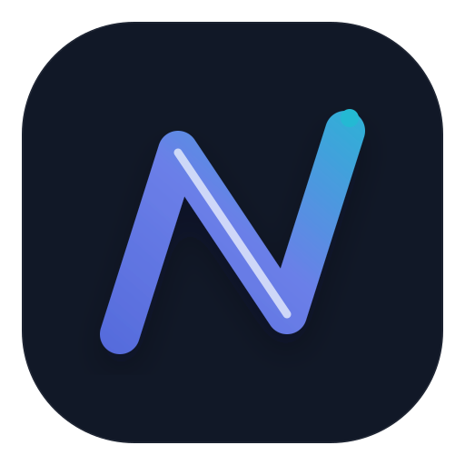

NOVANavegación limpia · rápida · controlada
Nova Start
Busca. Descubre. Sigue.
Una nueva pestaña útil, con noticias actuales y enlaces directos. Sin titulares de relleno y sin esconder qué fuente estás leyendo.
Accesos rápidos
Tus sitios fijados, con icono real cuando la web lo proporciona.Noticias
Cargando fuentes…
Cómo funcionan las noticias
Nova consulta fuentes RSS públicas y muestra título, resumen, fecha y enlace al artículo original. Cuando no hay conexión, la página cambia a Nova Briefing, que es contenido interno y está marcado como tal.
Atajos rápidos
Ctrl+T abre una pestaña nueva. La búsqueda admite URLs completas, dominios y consultas normales.
Ctrl+T · Nueva pestañaCtrl+L · DirecciónCtrl+F · Buscar en página